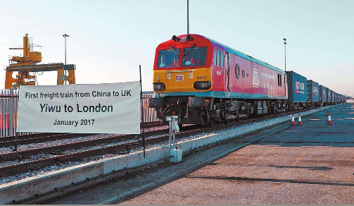
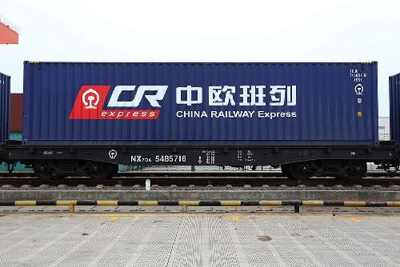

中欧班列——构筑中欧贸易的“黄金丝路”
2017年5月初的浙江义乌西货运站，作业繁忙而有序不乱。一只只满载小商品的集装箱经过海关查验施封后，这些货物将搭乘中欧班列启程，跨过万里行程走进欧洲的千家万户。
中欧班列是中国开往欧洲的快速货物班列，适合装运集装箱的货运编组列车。从2011年起，经过近6年的发展，至2017年5月，依托新亚欧大陆桥和西伯利亚大陆桥，已形成西、中、东三条中欧铁路运输通道，中国铁路已经铺画了中欧班列运行线51条，国内开行城市达到28个，到达欧洲11个国家29个城市。中欧班列已形成了“渝新欧”、“郑欧班列”、“汉新欧”、“蓉欧快铁”和“长安号”为主体的五大班列运输系统。
亚欧之间的物流通道主要包括海运通道、空运通道和陆运通道。中欧班列日均运行1300公里，正点率接近100%，最快12天抵达欧洲。运输时间是海运的三分之一，运价为空运的五分之一，运到时效和价格等诸多优势使中欧班列吸引集聚了更多的货源。
中欧班列在“一带一路”倡议中将丝绸之路从原先的“商贸路”变成产业和人口集聚的“经济带”起到了重要作用。建设“一带一路”倡议提出3年多来，在中国和世界的发展史册中留下了浓墨重彩的印迹，在交通物流领域同样落地有声。
以长三角为例，3年以来，长三角中欧班列营运线路从1条增长到现在的12条。在12条营运线路中，中欧班列（义乌—伦敦）途经哈萨克斯坦、俄罗斯、白俄罗斯、波兰、德国、比利时、法国、英国等国家，全程12451公里，是目前开行的中欧班列中所经国家最多、途经国家所装商品最丰富的国际铁路货运班列。
中欧班列俨然已成为“丝绸之路”沿线国家贸易往来的陆路运输骨干。这是一条“双赢之路”。越来越多的欧洲企业通过中欧班列将货物运往中国市场，回程列数不断增长。2017年一季度回程班列达到198列，同比增长187%。
2017年4月29日，首列从英国伦敦返程的中欧班列顺利抵达浙江义乌，实现中欧班列（义乌—伦敦）双向对开，至此，长三角中欧班列回程营运线路已达4条，并进入双向常态化开行。
从最初的单向运营到现在的双向运营，搭载在中欧班列上的货品种类日益丰富。从小商品和电子产品到纺织品、汽车及配件、机械装备、家具等，一趟趟满载着中国商品的班列运抵欧洲；西班牙红酒、波兰牛奶、保加利亚玫瑰精油、德国汽车……越来越多的欧洲商品也搭上中欧班列国际列车，进入中国市场。
中欧班列不仅给沿线国家送去了“中国制造”，也带去了“中国机会”。随着市场的认同和发展，未来中欧班列货源品类将更加丰富。作为“一带一路”倡议的一项重要务实合作举措，中欧班列开行方向、频次、运量和规模不断扩大，有力助推了“一带一路”建设发展进程，构筑起了中欧经贸文化交流的“黄金丝路”。
（原标题：中欧班列——构筑中欧贸易的"黄金丝路"）